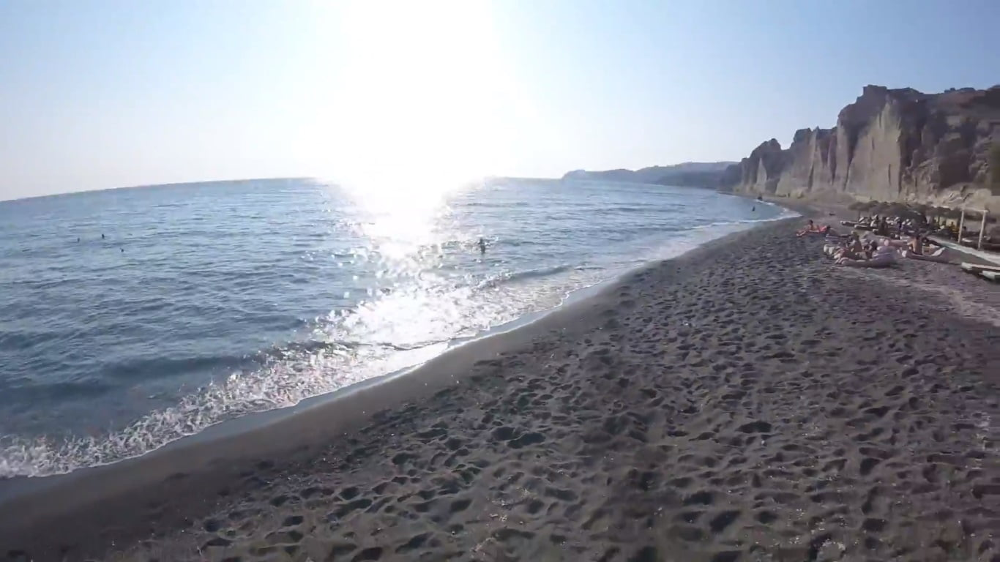

Greece is famous for its sensational beaches and crystal-clear waters. While most people imagine Greece’s beaches with golden or white sands, there is one type of beach that stands out from the rest – the black sand beach. In this article, we will explore the allure and uniqueness of Black Sand Beach Greece. Also, explore its popular destinations and discuss what makes them interesting. If you are looking for a unique shore experience, then It’s must be seen.
Table of Contents
What is a Black Sand Beach?
A black sand beach is a unique natural phenomenon where the sand consists of finely ground volcanic minerals, such as basalt, that give it a distinct dark coloration. These minerals are typically formed from volcanic rock that has been eroded and broken down by weathering and the ocean’s continuous action over time.
The Formation of Black Sand
Black sand is primarily created through volcanic activity. When volcanoes erupt, they emit molten lava. Which quickly cools on contact with water and breaks into small pieces. These fragments are further broken down by the pounding waves, resulting in the formation of black sand.
Unique Features of Black Sand Beaches
Black sand beaches offer a striking contrast to the traditional sandy shores. Their dark color absorbs and retains heat, making the sand warm to the touch, especially on sunny days. Additionally, the fine texture of the black sand gives it a soft and velvety feel, inviting visitors to walk along its shores.
Popular Black Sand Beaches in Greece

Santorini’s Perissa Beach
Perissa Beach, located on the enchanting island of Santorini, is famous for its volcanic origin and mesmerizing black sand. The beach stretches for several kilometers, offering a tranquil and picturesque setting against the backdrop of rugged cliffs and deep blue waters.
Milos Island’s Sarakiniko Beach
Sarakiniko Beach on the island of Milos is renowned for its lunar-like landscape. The striking white volcanic cliffs contrast beautifully with the black sand, creating a surreal and otherworldly atmosphere. Visitors can explore the intricate rock formations and enjoy the crystal-clear waters for a truly memorable experience.
Crete’s Matala Beach
Matala Beach in Crete is a hidden gem known for its unique blend of golden cliffs and black sand. In the 1960s and 70s, As a haven for hippies seeking solace this beautiful destination gained popularity. Today, it attracts visitors with its natural beauty, caves, and rich history.
The Fascination of Black Sand
Black sand beaches evoke a sense of mystery and intrigue. Their dark allure offers a distinctive ambiance, creating a stark contrast to the surrounding landscape. The dramatic scenery and unusual coloration make black sand beaches an irresistible attraction for those seeking a break from conventional beach experiences.
Activities and Attractions
Beyond the enchanting beauty of black sand beaches, visitors can engage in various activities and explore nearby attractions. From snorkeling and scuba diving to hiking the coastal trails. to immerse yourself in the natural wonders of this unique destination there are countless ways. To taste traditional Greek cuisine Local beach taverns and cafes offer the opportunity while enjoying the picturesque view of the Aegean Sea.
Tips for Visiting Black Sand Beaches
When visiting black sand beaches in Greece, including those in Santorini, it’s important to come prepared and follow some essential tips for a comfortable and enjoyable experience. Here are important tips to keep in mind:
i. Wear Comfortable Footwear as Black Sand Can Become Hot Under the Sun
The dark color of the black sand absorbs heat, making it hot to walk on, especially during peak sun hours. To protect your feet from the heat recommended to wear comfortable shoes such as flip-flops, sandals, or water shoes. This will ensure you can move around the beach comfortably without the risk of burning your feet.
ii. Bring an Umbrella or Seek Shade to Avoid Prolonged Exposure to the Sun
It is important to protect yourself from prolonged exposure to the sun’s rays while enjoying black sand beaches. Consider bringing an umbrella or beach tent to create your shade, especially during the hottest hours of the day. Shade provides relief from the direct sun, helps prevent sunburn, and allows you to enjoy the beach for longer periods comfortably.
iii. To Protect Your Skin from UV Rays, Use Sunscreen with a High SPF
Applying sunscreen is crucial when spending time at the black sand beaches. The dark sand can reflect sunlight, intensifying UV exposure. To save your skin from harmful UV rays choose a broad-spectrum sunscreen with a high sun protection factor (in short SPF). Apply it generously and reapply regularly, especially after swimming or sweating.
iv. Carry a Towel or Beach Mat to Sit or Lie on Comfortably
Having a towel or beach mat is essential for a comfortable beach experience. The black sand can retain heat, making it less comfortable to sit or lie directly on the ground. To create a barrier between you and the sand Bring a towel or mat. Because these things allow you to relax and enjoy your time without discomfort at the beach.
v. Respect the Environment and Avoid Littering
Protecting the natural beauty is crucial for the long-term sustainability of black sand beaches. Respect the environment by avoiding littering and disposing of your trash properly in designated waste bins. Help keep the beaches clean and protect marine life by not leaving any debris behind. By being mindful of the environment, you contribute to the preservation of these beautiful coastal areas.
By following these tips, you can have a comfortable and enjoyable experience while visiting the black sand beaches in Greece. Remember to prioritize your safety, protect your skin from the sun, respect the environment, and make the most of your time at these unique coastal destinations.
The Beauty of Contrast

The contrast between the dark sand, blue waters, and surrounding landscapes creates a visual spectacle that is both captivating and unforgettable. Photographers and nature enthusiasts find black sand beaches particularly appealing for their unique aesthetics, capturing breathtaking images that showcase the harmonious coexistence of nature’s contrasting elements.
Experiencing the Magic
To immerse oneself in the magic of nature, visiting a black sand beach in Greece is an opportunity. As the waves gently crash against the shore and the soft black sand shifts beneath your feet, you can’t help but feel a profound connection with the Earth’s ancient volcanic history.
Black Sand Beaches and Mythology
In Greek mythology, black sand beaches are often associated with tales of the gods and their interactions with mortals. These mythical stories add an extra layer of intrigue and allure to the already captivating black sand beaches, transporting visitors to a realm where legends intertwine with reality.
Environmental Considerations
When you plan to visit Greece’s black sand beaches, including Santorini. Being aware of the environment it’s important. And take steps to protect this unique coastal ecosystem. Here are some environmental considerations to keep in mind:
i. Respect the Natural Environment:
Treat the beaches and their surroundings with respect. Avoid leaving any litter or waste behind, and dispose of your trash in designated waste bins. Leave the beach as you found it, ensuring its natural beauty remains preserved for others to enjoy.
ii. Protect Marine Life:
The waters surrounding black sand beaches are home to diverse marine ecosystems. Avoid touching or disturbing marine life such as coral reefs or marine life, When you are swimming or snorkeling. Admire their beauty from a distance and refrain from feeding or chasing them.
iii. Use Reef-Safe Sunscreen:
Choose a “reef-safe” or “ocean-friendly” sunscreen. Because often regular sunscreens contain chemicals. And for marine life and coral reefs, it can be harmful. By opting for reef-safe options, you can protect both your skin and the delicate marine ecosystems.
iv. Minimize Water Usage:
Water is a valuable resource, particularly on islands like Santorini. Conserve water whenever possible by taking shorter showers and turning off taps when not in use. Every drop counts in maintaining the sustainability of these areas.
v. Support Sustainable Practices:
Look for businesses that prioritize sustainability and support their efforts. Choose accommodations, restaurants, and tour operators that promote environmentally friendly practices, such as recycling, energy efficiency, and local sourcing. You contribute to the preservation of the natural environment By supporting these establishments.
vi. Stay on Designated Paths:
When exploring the surroundings of black sand beaches, stick to designated paths and trails. Straying off the designated routes can cause erosion and harm the delicate coastal vegetation. Follow any signs or guidelines to protect the natural habitat.
vii. Educate Yourself:
To learn about the local ecosystem take some time. Cause it Included the flora and fauna that make it unique. Understand any specific regulations or guidelines that are in place to safeguard the environment. By educating yourself, you can make informed decisions and minimize your impact on the ecosystem.
By being environmentally conscious and following these considerations, you contribute to the preservation and sustainability of the black sand beaches in Greece, ensuring that future generations can continue to enjoy their natural beauty.
Monthly Weather in Santorini, Greece: A Guide to the Island’s Climate
With its graphical whitewashed buildings and stunning views of the Aegean Sea, Santorini of Greece is a sought-after destination for travelers worldwide. Understanding the monthly weather patterns in Santorini is essential for planning a visit that aligns with your preferred climate and activities. In this guide, we’ll discuss about the weather conditions from January to December. Highlight each month’s unique characteristics, and provide information. And the best time to visit Santorini based on weather preferences.
i. Greece Santorini Weather in January
January brings winter weather to Santorini, with cooler temperatures and increased rainfall. Temperature Range of the average daytime from 14 to 16 °C (57 to 61 °F). While it may not be the ideal time for sunbathing on the beaches, Santorini offers a different allure during this period. The island is tranquil, and visitors can explore its historical sites, indulge in local cuisine, and enjoy the serene beauty of the landscape.
ii. Greece Santorini Weather in February
February in Santorini continues to embrace winter weather. Temperature Range of the average daytime from 14 to 16 °C (57 to 61 °F) is similar to January. While rainfall is still prevalent, there are also moments of clear skies and sunshine. The island remains peaceful, allowing visitors to appreciate its natural and architectural wonders without the crowds. February is an excellent time to discover the local traditions and immerse yourself in the island’s authentic charm.
iii. Greece Santorini Weather in March
March marks the beginning of spring in Santorini. While temperatures gradually rise, it is still considered the transition period from the cooler winter months. Temperature Range of the average daytime from 15 to 18 °C (59 to 64 °F). You can expect a mix of sunny and cloudy days, with occasional rainfall. It is advisable to pack layered clothing to accommodate the changing temperatures.
iv. April Weather in Santorini, Greece
April brings milder and more pleasant weather to Santorini. Temperature Range of the average daytime from 17 to 20 °C (63 to 68 °F). Spring blooms adorn the island, creating a colorful and vibrant atmosphere. While there may still be occasional rainfall, the chances of sunny days increase. It is an ideal time to explore the island’s attractions and enjoy outdoor activities.
v. Greece Santorini Weather in May & What Time is Sunset in Santorini in May
May is a delightful month to visit Santorini as the weather continues to improve. Temperature Range of the average daytime from 21 to 24 °C (70 to 75 °F), offering pleasant and warm conditions. May also marks the beginning of the tourist season, with longer days and more visitors arriving on the island. The sunset in Santorini during May usually occurs between 7:45 PM and 8:15 PM, providing breathtaking views and opportunities for romantic evenings.
vi. Weather Santorini Greece June
June signals the arrival of summer in Santorini, and the island experiences some of its best weather during this month. Temperature Range of the average daytime from 24 to 27 °C (75 to 81 °F), with abundant sunshine and minimal rainfall. The sea becomes comfortably warm, inviting visitors to enjoy swimming and water sports. June is considered an excellent time to visit Santorini, but keep in mind that it is also a peak tourist season, and popular attractions can be crowded.
vii. July Weather in Santorini, Greece
July is the hottest and driest month in Santorini. The temperature range of the average daytime is from 27 to 30 °C (81 to 86 °F), with occasional spikes reaching even higher. It is the peak of summer, and the island is bustling with tourists. The days are long, allowing ample time for beach activities and exploring the island’s treasures. It is advisable to seek shade during the hottest hours and stay hydrated.
viii. August Weather in Santorini, Greece
August in Santorini maintains the hot and dry conditions that characterize the summer season. The temperature range of the average daytime is from 27 to 30 °C (81 to 86 °F). While it is an excellent time to enjoy the island’s beaches and outdoor activities, be prepared for increased crowds and higher accommodation rates. The availability of amenities and services is at its peak during this busy month.
ix. Weather in Santorini, Greece in September
September offers a pleasant transition from summer to autumn in Santorini. The temperature range of the average daytime is from 24 to 27 °C (75 to 81 °F), providing comfortable and warm weather. The sea remains inviting for swimming, and the number of tourists starts to decline compared to the peak summer months. September is an ideal time to visit Santorini for those seeking fewer crowds while still enjoying favorable weather.
x. Greece Santorini Weather in October
October marks the arrival of autumn in Santorini, bringing cooler temperatures and occasional rainfall. The average daytime temperature ranges from 21 to 24 degrees Celsius (70 to 75 degrees Fahrenheit). While the weather may be more unpredictable, the island retains its charm, and the changing colors of nature create a unique ambiance. It is advisable to pack some warmer clothing for the cooler evenings.
xi. Greece Santorini Weather in November
November is considered the transition period from autumn to winter in Santorini. The average daytime temperature ranges from 17 to 20 degrees Celsius (63 to 68 degrees Fahrenheit). Rainfall becomes more frequent, and the island starts to prepare for the quieter winter season. Visitors during November can enjoy a peaceful atmosphere, explore the local culture, and take advantage of lower accommodation rates.
xii. Greece Santorini Weather in December
December brings winter to Santorini, and the weather becomes cooler and wetter. The average daytime temperature ranges from 15 to 17 degrees Celsius (59 to 63 degrees Fahrenheit). While Santorini experiences a quieter period during this month, the island’s charm remains intact. Visitors can immerse themselves in the local traditions, explore historical sites, and enjoy cozy moments in the island’s taverns and cafes.
xiii. Best Weather in Santorini, Greece
The best weather in Santorini, Greece, can be found during the summer months of June, July, and August. These months offer the highest temperatures, abundant sunshine, and minimal rainfall, creating ideal conditions for beach activities, outdoor exploration, and sun-soaked relaxation.
xiv. Best Weather Time in Santorini, Greece
The best weather time in Santorini, Greece, is typically from late spring to early autumn. The months of May, June, September, and October provide favorable weather with pleasant temperatures, fewer crowds compared to the peak summer months, and a good balance between sunny days and occasional rainfall.
Plan your visit to Santorini based on your preferences and the activities you wish to engage in, whether it’s swimming in the turquoise waters, exploring the island’s historical sites, or simply indulging in the island’s unique ambiance and breathtaking views.
Embracing Winter on the Island
Visiting Santorini during January and February offers a unique experience for travelers seeking a different perspective. While the weather may not be suitable for traditional beach activities, there are plenty of other ways to enjoy the island’s beauty. Here are some suggestions:
Explore Historical Sites: Santorini is home to ancient ruins and archaeological sites. Take this opportunity to visit the Akrotiri archaeological site, where you can discover the remains of an ancient Minoan settlement. Explore the ruins of Ancient Thera, perched on a hilltop, offering panoramic views of the island.
Indulge in Local Cuisine: Santorini boasts a vibrant food scene. Warm up with traditional Greek dishes, such as moussaka, souvlaki, and fava. Visit local taverns and restaurants to savor the island’s culinary delights and experience the warmth of Greek hospitality.
Witness Spectacular Sunsets: While Santorini is famous for its sunsets, the winter months offer a unique ambiance. Find a cozy spot in Oia, Fira, or Imerovigli and witness the breathtaking beauty of the sun sinking into the Aegean Sea. The winter skies often create dramatic and colorful displays.
Visit Wineries: Santorini is renowned for its vineyards and exceptional wines. Take a tour of the island’s wineries, learn about the local grape varieties, and indulge in wine tastings. The peaceful winter months allow for a more intimate and personalized experience.
Experience Local Festivities: Santorini celebrates various cultural and religious festivities during the winter months. Participate in traditional events, such as the Carnival celebrations in February, which include parades, music, and vibrant costumes.
By embracing the winter atmosphere, you can discover a different side of Santorini, appreciate its tranquility, and engage with the local community on a more personal level.
In summary, While Santorini is most famous for its summer allure, visiting the island during the winter months of January and February offers a unique and peaceful experience. Embrace the cooler temperatures and occasional rainfall as an opportunity to explore the island’s historical sites, savor its culinary delights, witness mesmerizing sunsets, and engage with local traditions. Discover the hidden beauty of Santorini during winter and create memories that showcase the island’s authentic charm.
Preserving the Black Sand Beaches
Efforts are being made to preserve and protect Greece’s black sand beaches. Local communities, environmental organizations, and authorities are working together to raise awareness, implement sustainable practices, and safeguard these unique coastal treasures for future generations to enjoy.
Why Are There Black Sand Beaches in Santorini? Exploring the Origin and Beauty
Santorini, the iconic Greek island known for its stunning vistas and picturesque landscapes, is also famous for its unique black sand beaches. These captivating beaches, with their dark sands contrasting against the azure waters of the Aegean Sea, hold a mysterious allure. In this article, we will delve into the reasons behind the presence of black sand beaches in Santorini, their specific locations, and whether swimming is possible in these enchanting coastal areas.
Why Are There Black Sand Beaches in Santorini?
The existence of black sand beaches in Santorini can be attributed to the island’s volcanic history. Santorini, also known as Thera, is the remnant of a volcanic caldera formed by a massive volcanic eruption that occurred around 3,600 years ago. This cataclysmic event, known as the Minoan eruption, left behind a unique geological landscape, including the striking black sand beaches.
The black color of the sand is a result of volcanic activity. When molten lava from the eruption came into contact with the cool seawater, it rapidly solidified and fragmented into tiny particles. Over time, the powerful forces of nature, such as wind and water, broke down the hardened lava into smaller fragments, creating the fine black sand found on the beaches of Santorini.
Where Are the Black Sand Beaches Located? Exploring Santorini’s Unique Coastal Gems
Santorini, the captivating Greek island known for its breathtaking landscapes and volcanic history, is home to several stunning black sand beaches. These alluring coastal areas, with their dark volcanic sands contrasting against the azure waters of the Aegean Sea, attract visitors from around the world. In this article, we will explore the specific locations of Santorini’s black sand beaches, showcasing their individual characteristics and the experiences they offer.
Kamari Beach

Kamari Beach, situated on the eastern coast of Santorini, is one of the island’s most popular black sand beaches. It stretches for approximately five kilometers and offers a vibrant atmosphere. Visitors to Kamari Beach can soak up the sun on the volcanic sands, take refreshing dips in the crystal-clear waters, and enjoy beachfront dining at the numerous taverns and restaurants along the promenade. The beach is also well-equipped with water sports facilities, providing opportunities for adventure and excitement.
Perissa Beach

Perissa Beach, located adjacent to Kamari Beach, is another renowned black sand beach in Santorini. Known for its long stretch of dark sand, Perissa Beach offers a relaxed and laid-back ambiance. Visitors can unwind on sun loungers, take leisurely walks along the shoreline, and indulge in beachside refreshments at the beach bars and cafes. Perissa Beach is a popular spot for swimming, with its calm waters providing a refreshing escape from the summer heat.
Perivolos Beach

Perivolos Beach, situated next to Perissa Beach, offers a serene and tranquil setting. With its soft black sand and clear blue waters, this beach provides a peaceful escape for those seeking a quieter beach experience. Perivolos Beach boasts a laid-back atmosphere, making it an ideal spot for sunbathing, reading a book, or enjoying a leisurely swim. Visitors can also explore the beachfront taverns and restaurants, where they can savor delicious Greek cuisine and relish the scenic views.
Vlychada Beach

Vlychada Beach, located on the southern coast of Santorini, stands out for its unique and striking lunar-like landscape. For impressive cliffs and eroded rock formations, Vlychada Beach is well-known. Because it provides a dramatic backdrop of black sand. Vlychada Beach offers a more secluded and rugged setting, attracting those looking for a unique beach experience. Visitors can wander along the shore, marvel at the fascinating geological formations, and find their own tranquil spot to enjoy the beauty of the surroundings.
Columbo Beach

Columbo Beach, situated on the northeast coast of Santorini, offers a hidden gem for beach enthusiasts seeking a more secluded experience. Known for its wild beauty and black pebbles, Columbo Beach is surrounded by impressive cliffs and provides a sense of tranquility away from the crowds. The Aegean Sea’s deep blue waters, against the dark sand, make for a mesmerizing scene. While Columbo Beach doesn’t have the same level of amenities as other beaches, its natural charm and peaceful atmosphere make it a favorite among locals and adventurous travelers.
Mesa Pigadia Beach

Mesa Pigadia Beach, located on the southeastern coast of Santorini, is a hidden paradise known for its unspoiled beauty. Accessible via a steep path or by boat, Mesa Pigadia offers a secluded and pristine setting away from the tourist crowds. The beach’s black volcanic sand and crystal-clear waters provide a serene environment for relaxation and swimming. Visitors can bring their own beach essentials and enjoy a peaceful day in this secluded coastal haven.
Monolithos Beach

Monolithos Beach, situated on the eastern coast of Santorini, offers a family-friendly atmosphere and a wide stretch of dark sand. The shallow and calm waters make it an ideal destination for families with children. Monolithos Beach is well-organized, with sunbeds and umbrellas available for rent, and it provides various amenities, including beachfront cafes and restaurants. For swimming, sunbathing, and engaging in beach activities Monolithos Beach provides a safe and enjoyable environment.
Eros Beach

Eros Beach, located on the southern coast of Santorini, offers a secluded and pristine environment for beachgoers. Eros Beach is a small and quiet beach. For its unique volcanic landscape, black sand, and crystal-clear water it is also well known around the world. Eros Beach is accessible via a winding path and is a favorite spot for snorkeling and exploring the underwater world. Here visitors can enjoy the tranquility and unspoiled beauty.
Koloumbos Beach

Koloumbos Beach, situated on the northeastern coast of Santorini, is another lesser-known black sand beach on the island. With its dark volcanic sands and wild beauty, Koloumbos Beach offers a more off-the-beaten-path experience. The beach is less crowded, providing a peaceful and serene atmosphere for those seeking solitude and natural surroundings. Visitors can enjoy the tranquility, take in the stunning coastal scenery, and unwind amidst the beauty of Koloumbos Beach.
White Beach

White Beach, although not a black sand beach, deserves a mention due to its unique coloring and proximity to the black sand beaches of Santorini. Located near the Akrotiri archaeological site, White Beach features stunning white cliffs and pebbles, creating a striking contrast against the deep blue waters of the sea. While the beach itself is not easily accessible by land, visitors can reach it by boat or via a hiking trail from nearby Red Beach. White Beach offers a secluded and pristine environment for relaxation and exploration.
In summary, Santorini’s black sand beaches offer a diverse range of experiences and scenic beauty. Whether you seek a lively and vibrant atmosphere or a tranquil and secluded haven, the island has a black sand beach to suit your preferences. From Kamari Beach to Perissa Beach, Perivolos Beach to Vlychada Beach, each location offers its unique charm, allowing visitors to immerse themselves in the allure of Santorini’s captivating coastal landscapes.
Where Are the Black Sand Beaches Located?
Santorini is home to several black sand beaches, each offering its unique beauty and charm. Here are some notable black sand beach locations on the island:
Perissa Beach: Located on the southeastern coast of Santorini, Perissa Beach is one of the most famous black sand beaches on the island. Stretching for several kilometers, it offers a long expanse of volcanic sand bordered by crystalline waters. The beach is also lined with beach bars, restaurants, and water sports facilities.
Kamari Beach: Situated next to Perissa Beach, Kamari Beach is another popular destination known for its volcanic sands. It features a lively promenade with a variety of dining options, beach clubs, and shops. Kamari Beach offers a vibrant atmosphere and stunning views of the imposing Mesa Vouno rock formation.
Perivolos Beach: Located adjacent to Perissa Beach, Perivolos Beach offers a more laid-back and tranquil setting. It is known for its pristine black sand and clear waters. Visitors can relax on sun loungers, enjoy beachfront taverns, and partake in various water activities.
Vlychada Beach: Vlychada Beach is located on the southern coast of Santorini and stands out for its lunar-like landscape. The beach is surrounded by imposing cliffs, eroded by the sea and wind over time. Its unique geological formations and black sand create an otherworldly atmosphere.
FAQs (Frequently Asked Questions)
Q: Are black sand beaches safe for swimming?
A: Yes, Black sand beaches are generally safe for swimming. However, it is advisable to check the local conditions and heed any warnings from lifeguards or authorities.
Q: Is it true that black sand retains heat?
A: Yes, black sand has a higher capacity to retain heat compared to lighter-colored sand, making it feel warmer to the touch.
Q: How can I best capture the beauty of black sand beaches in photographs?
A: To capture the beauty of black sand beaches, experiment with different lighting conditions, angles, and perspectives to highlight the contrast between the dark sand and the surrounding elements. Play with the textures and colors to create visually striking images.
Q: Can I find black sand beaches on other Greek islands?
A: While black sand beaches are most commonly associated with Santorini, Milos, and Crete, there are other Greek islands where you can find them, such as Naxos, Ios, and Thassos. Each island offers its unique charm and characteristics.
Q: What is the best time of year to visit black sand beaches in Greece?
A: Summer session (June to September) is the best time to visit the black sand beaches of Greece. Because then the weather is warm and the sea invites swimming. But an important note is that these beaches can get crowded during peak tourist season. So if you prefer a quieter experience, consider visiting during the spring or fall shoulder seasons.
Q: Can You Swim in the Sea at Santorini’s Black Sand Beaches?
A: Yes, swimming is possible at Santorini’s black sand beaches. Aegean beaches offer cool refreshing waters that give you a chance to cool off. But an important note is that the volcanic nature of sand can trap heat, making it even hotter in direct sunlight. It is recommended to bring beach footwear such as sandals or water shoes. This note is important to walk comfortably on dark sand and protect your feet from potential heat.
Conclusion
The allure of black sand beaches in Greece lies not only in their striking beauty but also in the captivating contrast they offer to traditional sandy shores. From the volcanic landscapes of Santorini’s Perissa Beach to the lunar-like allure of Milos Island’s Sarakiniko Beach, these natural wonders invite travelers to embark on a unique coastal adventure. With their rich history, mythological associations, and opportunities for exploration and relaxation, black sand beaches in Greece are an absolute must-visit for anyone seeking an extraordinary beach experience.
Comments